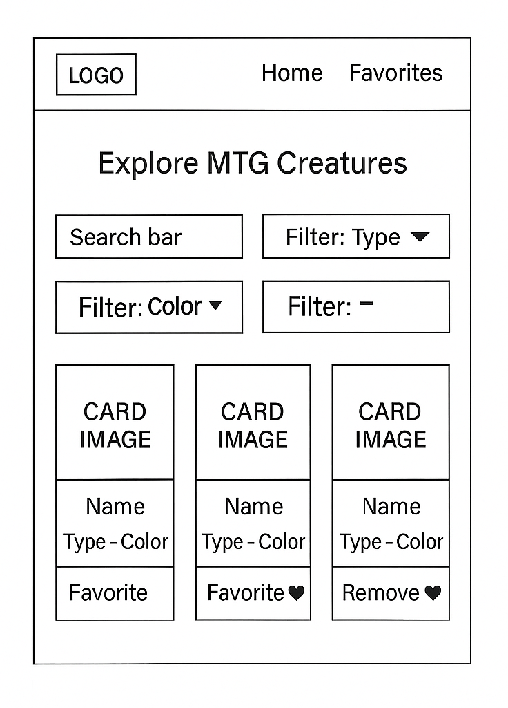
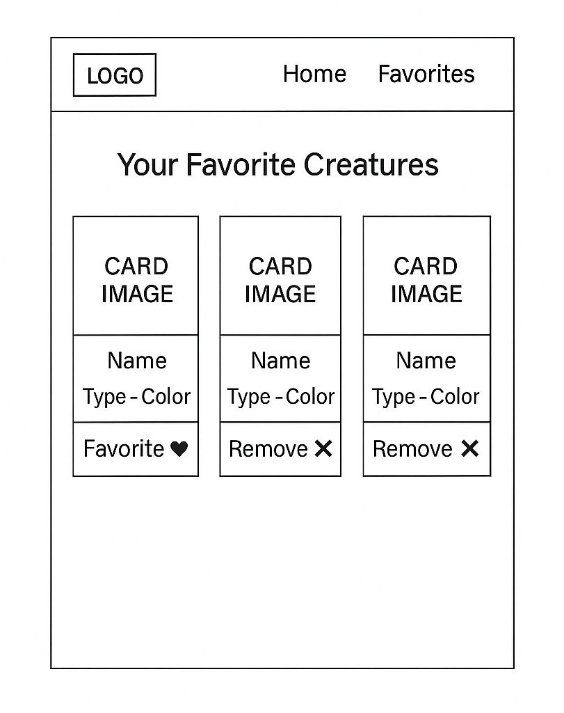

Overview
Purpose
The MTG Creature Gallery helps players explore Magic: The Gathering creature cards. Users can filter by color or type, view details, and favorite cards for quick reference.
Audience
This site is for casual and intermediate MTG players who want a lightweight tool to browse creature cards and experiment with their favorite combinations.
Dynamic elements
JavaScript will be used to display a list of MTG creature cards from an array of objects. Users can filter the cards by color or type using dropdown menus. The site will also include a real-time search input that filters the cards by name as the user types. Users can click a card to add it to a favorites list, which will be shown on a separate page. JavaScript will use DOM interaction, event listeners, conditional logic, and array methods like forEach(), filter(), and map(). Data will be shared using ES modules.
Branding
Website Logo
Style Guide
Color Palette
Palette URL: https://coolors.co/396e94-e7c24f-a43312-381d2a-aabd8c| Primary | Secondary | Accent 1 | Accent 2 |
|---|---|---|---|
| #396E94 | #E7C24F | #A43312 | #AABD8C |
Typography
Heading Font: Cinzel
Paragraph Font: Roboto
Normal paragraph example
Magic: The Gathering creatures are the core of many decks, each offering unique powers and strategies. This gallery will help you explore and sort through some of the most iconic creatures.
Colored paragraph example
Browse red dragons, green beasts, blue elementals, and more — filter by color and type to discover your favorites.
Navigation
Content
Home page
This page will introduce the MTG Creature Gallery and explain the concept of creature types and the color pie in Magic: The Gathering. Users will see a list of creature cards (name, type, mana cost, image) loaded from a data array. A search input field will allow users to filter cards by name in real time. There will also be dropdowns or buttons for filtering by color or type. Each card will have a "Favorite" button to add it to a custom list stored in memory.
Favorites Page
This child page will display the user’s selected favorite creature cards. Cards can be removed from the list here. The page will include short text explaining why it’s helpful to preview creatures and plan decks.
Wireframes
Below are the wireframes showing the layout of each page.
Home
This shows the layout for the search bar, filters, and card grid on the main page.
Favorites Page
This shows how the user’s favorited cards will be displayed and managed.
